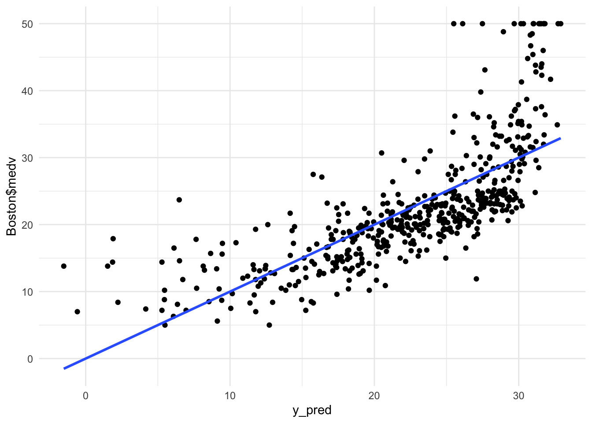
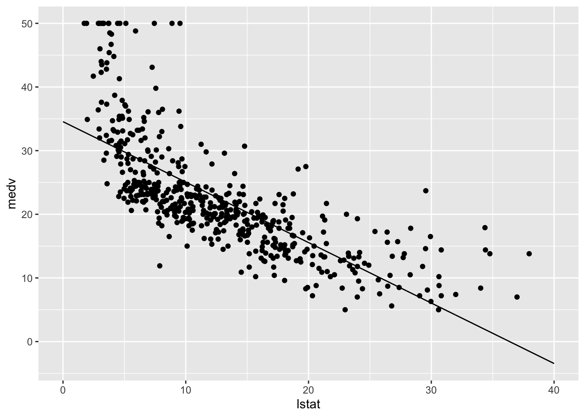
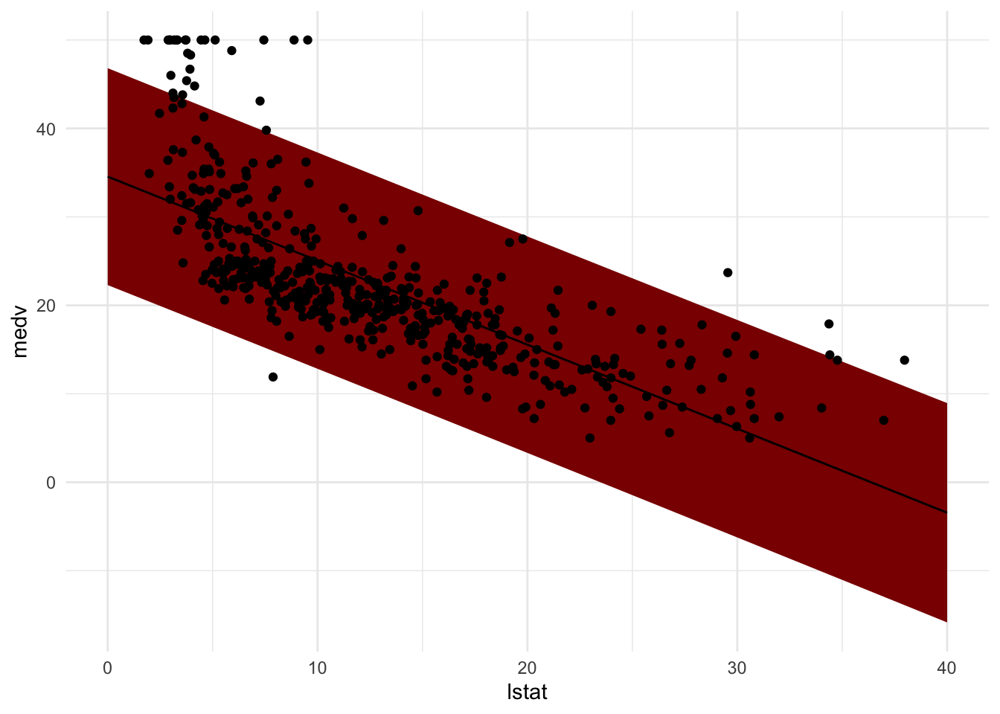
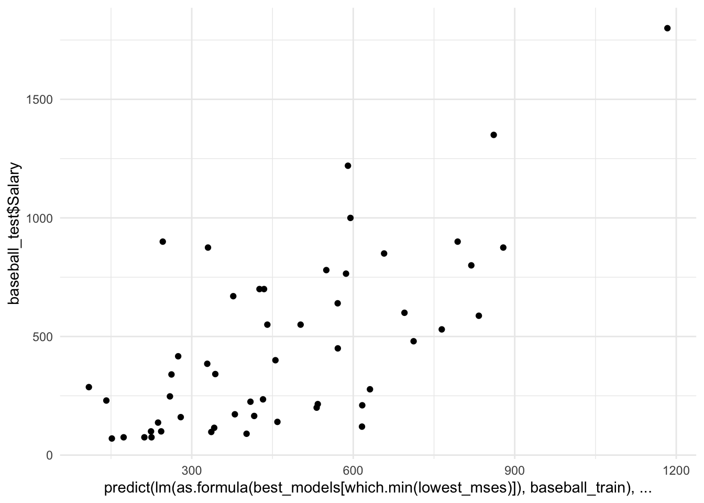
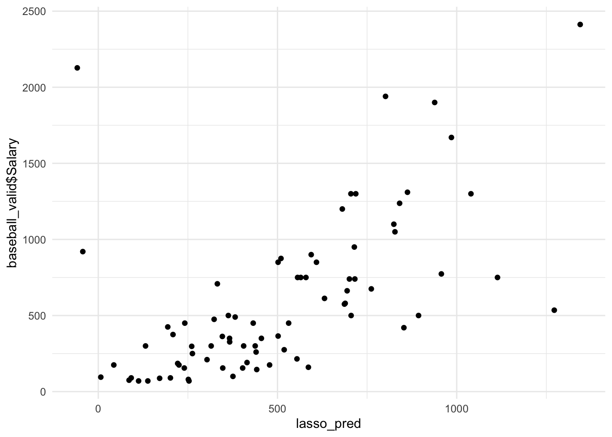
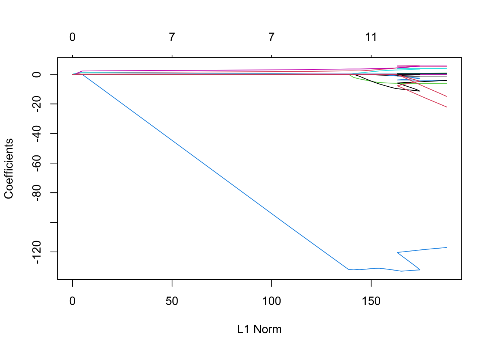
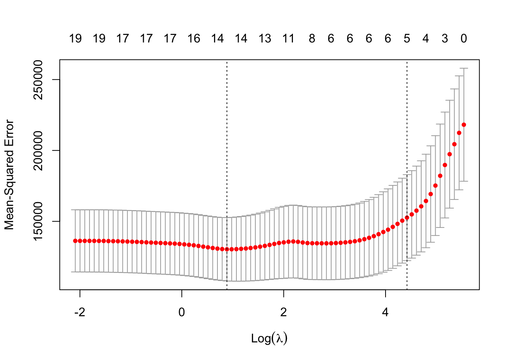
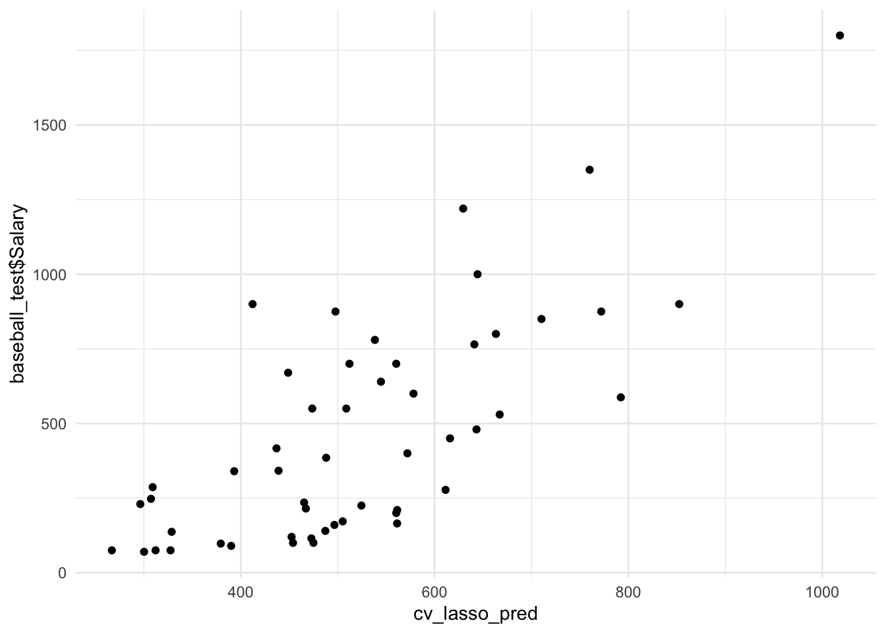
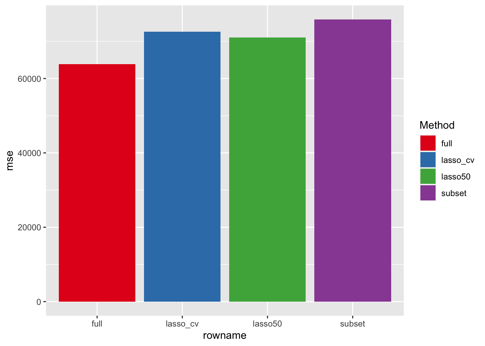

Chapter 4 Regression
4.1 Book
4.1.1 Chapter 3
4.1.1.1 Prediction
In many cases, predictors \(X\) are readily available, but \(Y\) is not. We can however predict \(Y\), as the error term \(\epsilon_i\) averages to zero. Often, \(\hat{f}\) is treated as a black box when prediction is of interest, as one is typically not concerned with the exact form of \(\hat{f}\), provided that it yields accurate predictions for \(Y\).
- Reducible error: the misspecification error that is due to the fact that \(\hat{f}\) is usually not a perfect estimate of \(f\), that can potentially be improved.
- Irreducible error: \(Y\) is not only a function of \(f\), but also of \(\epsilon\); and the variability associated with \(\epsilon\) affects our predictions. \(\epsilon\) may contain unmeasured variables and/or unmeasured variation.
- Given that \(\hat{Y} = \hat{f}(X)\), assume that \(\hat{f}\) and \(X\) are fixed. \[\begin{align} E(Y - \hat{Y})^2 &= E[f(X) + \epsilon - \hat{f}(X)]^2 \\ &= [f(X) - \hat{f}(X)]^2 + Var(\epsilon) \end{align}\] \(E(Y - \hat{Y})^2\) represents the expected value of the squared difference between the predicted and actual value of \(Y\) and \(Var(\epsilon)\) the variability associated with \(\epsilon\)
- The irreducible error provides the upper bound of the accuracy of the predictions, but this upper bound is generally unknown in practice.
4.1.1.2 Inference
The goal of inference is to understand how \(Y\) changes as a function of \(X\). If this is the case, \(\hat{f}\) cannot be treated as a black box, because we need to know its exact form. Questions of interest can be:
- Which predictors are associated with \(Y\)?
- What is the relation between \(Y\) and each predictor?
- Can the relationship between \(Y\) and each predictor be adequately summarized with a linear equation?
We want to find a function \(\hat{f}\) such that \(Y \approx \hat{f}(X)\) for any observation \((X, Y)\).
4.1.1.3 Parametric methods
- Parametric methods make an assumptions about the functional form of \(f\).
- After selecting a global model, we need a procedure that trains the model (in linear regression, this refers to estimating the parameters \(\beta_0, \beta_1, \dots, \beta_p\)). Parametric approaches reduce the problem of estimating \(f\) down to one of estimating a set of parameters.
Assuming a parametric form for \(f\) simplifies the problem of estimating \(f\) as it generally is much easier to estimate a set of parameters than it is to fit an entirely arbitrary function. However, a potential drawback is that the model considered in a parametric approach usually not matches the true unknown form of \(f\). This can be partly overcome by fitting more flexible models, which in turn might lead to overfitting.
4.1.1.4 Non-parametric approaches
- Seek an estimate that is as close to \(f\) as possible without overfitting. Non-parametric approaches usually do not make assumptions about the functional form of \(f\). However, they generally need a much larger number of observations relative to parametric methods to obtain an accurate estimate of \(f\).
4.1.1.5 Statistical learning
Restrictive models are much more interpretable. Very flexible approaches may lead to such complicated estimates of \(f\) that it is difficult to understand how any individual predictor is associated with the response. For example, the lasso is more restrictive than OLS in estimating the coefficients and sets some of them to exactly zero. It is more interpretable than OLS, because in the final model there are less coefficients, so one only has to interpret a subset of the coefficients that would have been included in OLS regression. GAMs extend the linear model by allowing non-linear relationships, but the relationship between \(Y\) and \(X\) is now modeled as a curve, which complicates interpretation.
Supervised learning: a response \(Y\) is related to a set of predictors \(X\), with the aim to predict or infer the relationship between the two.
Unsupervised learning: We only have predictors \(X\) and the goal is to understand relations between the variables or between the observations.
Regression problems: quantitative response.
Classification problems: qualitative response.
However, logistic regression is typically used in a qualitative setting, but as it estimates probabilities, it can be thought of as a regression method as well. Some methods (K-nearest neighbors; boosting) can be used for both quantitative or qualitative responses.
4.1.1.6 Model accuracy
\[ MSE = \frac{1}{n} \sum^n_{i = 1} (y_i - \hat{f}(x_i))^2 = \frac{1}{n} \sum^n_{i = 1} (y_i - \hat{y}_i)^2 \]
The mean squared error (MSE) should be calculated on the test data. We want to know whether \(\hat{f}(x_0)\) is approximately equal to \(y_0\), where \((x_0, y_0)\) is a previously unseen test observation not used to train the statistical learning method. Thus, we want the model with the lowest test MSE \[ \text{Ave}(y_0-\hat{f}(x_0))^2. \]
The expected test MSE for a given value \(x_0\) can be decomposed into the sum of three fundamental quantities: the variance of \(\hat{f}(x_0)\), the squared bias of \(\hat{f}(x_0)\) and the variance of the error term \(\epsilon\). To minimize the expected test error, we need to select a method that simultaneously achieves low bias and low variance. Note that the expected test MSE cannot be smaller than \(\text{Var}(\epsilon)\).
- Variance: the amount by which \(\hat{f}\) would change if we estimated it using a different training set.
- Bias: the error that is introduced by simplifying a complicated real-life problem with a much simpler model.
Generally, more flexible methods induce less bias but more variance. As we increase the flexibility of a class of methods, the bias initially tends to decrease faster than the variance increases, and thus the MSE declines. At some point, relatively little bias can be removed, but the variance increases, inducing a higher expected MSE.
4.1.1.7 Residual sum of squares
\[ \begin{align} RSS &= e_1^2 + e_2^2 + \dots + e_n^2 \\ &= (y_1 - \hat{\beta}_0 - \hat{\beta}_1x_1)^2 + \dots + (y_n - \hat{\beta}_0 - \hat{\beta}_1x_n), \end{align} \] with
$$ \begin{aligned} _1 &= \
_0 &= {y} - _1{x}.
\end{aligned} $$
The least squares estimates are unbiased, that is, they do not systematically over or underestimate the true coefficients. We can express the expected amount that the estimates will differ from the truth with the standard error
\[ \text{Var}(\hat{\beta}) = \text{SE}(\hat{\beta})^2 = \frac{\sigma^2}{n}, \] where \(\sigma\) is the standard deviation of each of the realizations \(y_i\) of \(Y\). The estimates of the regression coefficients can be computed fairly easily, but for these formulas to be valid, the errors \(\epsilon_i\) must be uncorrelated with a common variance \(\sigma^2\).
Note that \(\text{SE}(\hat{\beta}_1)\) is smaller when the \(x_i\) are more spread out. Intuitively, we have more leverage to estimate a slope when this is the case. In general, \(\sigma^2\) is not known, but can be estimated from the data. The estimate of \(\sigma\) is known as the residual standard error, and is given by the formula \(\sqrt{\frac{\text{RSS}}{(n-p-1)}}\). Then, we can compute a \(95\%\) confidence interval by adding and substracting 2 times the standard error of the coefficients, which indicate that with \(95\%\) probability, the CI will contain the true value of the parameter. To test a null hypothesis \(H_0: \beta_1 = 0\), we can compute a t-statistic \[ t = \frac{\hat{\beta}_1 - 0}{\text{SE}(\hat{\beta}_1)}, \] which measures the number of standard deviations \(\hat{\beta}_1\) is away from zero. If there is no relationship between \(X\) and \(Y\), we expect that \(t\) will have a \(t\)-distribution with \(n-2\) degrees of freedom. Then, we can compute the \(p\)-value, which is the probability that we observe any number equal to \(|t|\) or larger in absolute value.
4.1.1.8 Accuracy of the model
The quality of a linear regression model is typically assessed using the residual standard error (RSE) and the \(R^2\) statistic. The RSE is an estimate of the average amount that the response will deviate from the true regression line, and can be calculated with \[ \text{RSE} = \sqrt{\frac{1}{n-p-1}\text{RSS}} = \sqrt{\frac{1}{n-p-1}\sum^n_{i = 1} (y_i - \hat{y}_i)^2}. \]
The \(R^2\) statistic provides an absolute measure of lack of fit of the model to the data \[ R^2 = \frac{\text{TSS} - \text{RSS}}{\text{TSS}} = 1 - \frac{\text{RSS}}{TSS}, \] where \[ TSS = \sum^n_{i=1}(y_i - \bar{y})^2. \]
However, determining what a good value of \(R^2\) is depends on the data. In the social sciences, a different value can be expected than sometimes in physics, where an \(R^2\) that approaches \(1\) is not unrealistic.
4.1.1.9 Multiple linear regression
We interpret the regression coefficients \(\beta_j\) as the average effect on \(Y\) of a one-unit increase in \(X_j\), holding all other predictors \(X_{j'}\) fixed. To test whether there is a relationship between the response and the predictors, we can compute the \(F\)-statistic, \[ F = \frac{(\text{TSS} - \text{RSS}) / p}{\text{RSS} / (n - p - 1)}. \] If the linear model assumptions are correct, one can show that \[ E\Bigg\{\frac{\text{RSS}}{n-p-1}\Bigg\} = \sigma^2, \] and that, provided that \(H_0\) is true \[ E\Bigg\{\frac{\text{TSS} - \text{RSS}}{p}\Bigg\} = \sigma^2. \] Hence, when there is no relationship between the response and the predictors, one would expect a value of the \(F\)-statistic close to \(1\). If \(H_a\) is true, \(E\{(\text{TSS} - \text{RSS)/p}\} > \sigma^2\), so we expect \(F > 1\). To test whether a subset of the regression coefficients are all equal to \(0\), we can test a second model without all predictors of interest (next to the one including all predictors), and test whether the reduction in residual sum of squares of the model containing all parameters is significant. For each individual predictor, the \(t\) statistic is exactly equivalent to computing the \(F\)-statistic with a model excluding that single parameter. However, the \(F\)-statistic accounts for the number of predictors in the model, while all individual \(t\)-statistics do not.
4.1.1.10 Variable selection
Investigating all possible combinations of variables is generally infeasible, because the possible number of combinations is generally extremely large. An alternative can be forward selection - adding the predictor that is most informative (largest reduction in RSS) - or backward selection - remove the variable with the largest p-value. Eventually, we could choose mixed selection - we add the most informative predictors, and remove the predictors with a p-value above a certain threshold in the meantime.
4.1.1.11 Model fit
\(R^2\) will always increase when adding new predictors. However, the residual standard error (RSE) can increase if new predictors to the model \(\text{RSE} = \sqrt{\frac{1}{n - p -1}\text{RSS}}\), when the decrease in RSS is small relative to the increase in \(p\).
4.1.1.12 Predictions - sources of uncertainty
- The estimated regression coefficients do not necessarily represent the truth (i.e., reducible error).
- A linear model is at best an approximation of the truth (i.e., also reducible error called model bias).
- Random error - irreducible error, can be taken into account with a prediction interval.
4.1.1.13 Assumptions of additivity and linearity
- Additivity: the effect of changes in \(X_j\) on \(Y\) is independent from the values of \(X_{j'}\). However, this assumption can be relaxed / overcome by including interaction terms, so that the effect of \(X_j\) on \(Y\) is no longer constant.
- Linearity: the change in \(Y\) due to a one-unit increase in \(X_j\) is constant, regardless of the value of \(X_j\). Can be relaxed by using polynomial regression.
4.1.1.14 Potential problems
- Non-linearity: inspect using residual plots, problems can be overcome by using non-linear transformations of the predictors.
- Correlated error terms: results in underestimated standard errors. Correlated error terms may show up as tracking of the residuals.
- Non-constant variance of error terms: possibly, \(Y\) can be transformed to overcome this problem (\(\text{log}Y\) or \(\sqrt{Y}\)).
- Outliers: when outliers are due to coding errors, they may be removed. However, outliers may also be due to model misspecification.
- High leverage points: have an unusual value on \(x_i\) and tend to influence the estimated coefficients. They may be indicated by the leverage statistics.
- Collinearity: can make it difficult to separate out the effects of collinear variables on the response.
- Multicollinearity: a high correlation between three or more variables, even if no pairs of observations have a particularly high correlation. Can be assessed using VIF.
4.1.1.15 Summary
Parametric methods are easy to fit, because one only needs to estimate a relatively small number of coefficients, and if linear regression is used, coefficients have a simple interpretation. However, by definition, parametric models make strong assumptions about the functional form of \(f(X)\). If the specified functional form is far from the truth, and predictive accuracy is our goal, the parametric method will perform poorly. Non-parametric methods do not explicitly assume a parametric form for \(f(X)\), and thereby provide more flexibility.
K-nearest neighbor regression - given a value for \(K\) and a prediction point \(x_0\), KNN regression identifies the \(K\) training observations closest to \(x_0\) (denoted \(\mathcal{N}_0\)) and estimates \(f(x_0)\) using the average of all training reponses in \(\mathcal{N}_0\). The optimal value for \(K\) depends on the bias / variance trade-off.
Parametric approaches will outperform non-parametric approaches if the selected parametric form is close to the true form of \(f\). Also, in higher dimensions, KNN often performs worse than linear regression, due to the curse of dimensionality (the nearest observations to a given test observation \(x_0\) may be far away from \(x_0\) in \(p\)-dimensional space, especially when \(p\) is large), leading to poor predictions.
4.1.2 Chapter 6 - Model selection
4.1.2.1 Prediction accuracy
If the true relationships are approximately linear, least squares estimates generally have low bias, and if \(n\) is much larger than \(p\), least squares estimates also have low variance. If \(n\) is not much larger than \(p\), there can be a lot of variability in the least squares fit, resulting in overfitting and poor predictions on test data. If \(p > n\), there is no unique least squares coefficient estimate: the variance is infinite. By constraining or shrinking the estimated coefficients, we can often substantially reduce the variance, while only slightly increasing the variance. By removing irrelevant variables, the model interpretability increases, as we have to look at less estimated coefficients.
4.1.2.2 Subset selection
Best subset selection: fit a regression model on all \(2^p\) possible models, and use the best one. Usually, best subset selection is broken up into two stages:
Let \(M_0\) denote the null / intercept-only model, and for \(k = 1, 2, \dots, p\), do:
1.1 Fit all \(p \choose k\) models that contain exactly \(k\) predictors.
1.2 Pick the best model (smallest RSS) and call it \(M_k\).
Select a single best model from among \(M_0, \dots, M_p\) using the cross-validated prediction error, \(C_p~(AIC)\), \(BIC\) or \(\text{adjusted}~R^2\).
Step 1 identifies the best model on the training data for each subset size, the the reduced number of models considered in cross-validation. When a logistic regression model is of interest, we can also perform cross-validation, but we then look at the deviance instead of RSS / \(R^2\). As \(p\) gets very large (\(> 40\)), best subset selection is infeasible, even with extremely fast computers.
4.1.2.3 Stepwise selection
Forward stepwise selection
Let \(M_0\) denote the null model, and for \(k = 0, \dots, p-1\)
1.1 Consider all \(p-k\) models that augment the predictors in \(M_k\) with one additional predictor.
1.2 Choose the best among these \(p - k\) models and call it \(M_{k+1}\), where best is defined as having the lowest RSS / highest R^2.
Select a signle best model from among \(M_0, \dots, M_p\) using the cross-validated prediction error, \(C_p~(AIC)\), \(BIC\) or \(\text{adjusted}~R^2\).
Instead of \(2^p\) models, we now only consider the null model and the \(p-k\) models in the \(k^{th}\) iteration, in total \(1 + p(p+1)/2\). Although forward selection tends to do well in practice, it is not guaranteed to find the best possible model, as not all combinations are considered. Forward selection can also be applied when \(n < p\), but then models with \(p > n\) are not considered.
Backward stepwise selection
Let \(M_p\) denote the full model containing \(p\) predictors and for \(k = p, p-1, \dots, 1\), do:
1.1 Consider all \(k\) models that contain all but one of the predictors in \(M_k\), for a total of \(k - 1\) predictors.
1.2 Choose the best among these \(k\) models and call it \(M_{k-1}\) (smallest RSS / largest \(R^2\)).
Select a signle best model from among \(M_0, \dots, M_p\) using the cross-validated prediction error, \(C_p~(AIC)\), \(BIC\), or \(\text{adjusted}~R^2\).
Backward selection is not guaranteed to find the best model containing a subset of the \(p\) predictors, and it is required that \(n > p\).
Hybrid approaches
Variables are added sequantially, as in forward selection, but after any addition, variables that no longer contribute to the fit may be removed.
4.1.2.4 Choosing the optimal model
Choose a model with the lowest test error. The training error can be a poor estimate of the test error, and therefore, RSS and \(R^2\) are not appropriate for selecting the best model among a collection of models with different numbers of predictors.
There are generally two approaches to estimate the test error:
Indirectly estimate the test error by making an adjustment to the training error to account for the bias due to overfitting.
Directly estimate the test error by using a validation set / cross-validation approach.
The MSE \((RSS / n)\) in the training set is generally an underestimate of the test MSE. The training error will namely decrease as we add predictors to the model, while the test error may not. Therefore, we need methods that adjust for the number of predictors.
\[ C_p = \frac{1}{n}(RSS + 2d\hat{\sigma}^2), \] with \(d\) the number of predictors and \(\hat{\sigma}^2\) an estimate of the residual error variance. Typically, \(\hat{\sigma}^2\) is estimated using the full model containing all predictors. Thus, the \(C_p\) statistic adds a penalty of \(2d\hat{\sigma}^2\) to the training RSS to adjust for the fact that the training error tends to underestimate the test error. If \(\hat{\sigma}^2\) is an unbiased estimate of \(\sigma^2\), \(C_p\) is an unbiased estimate of the test MSE. \[ AIC = \frac{1}{n\hat{\sigma}^2}(RSS + 2d\hat{\sigma}^2), \] and for least squares models, \(C_p\) and \(AIC\) are proportional to each other. \[ BIC = \frac{1}{n\hat{\sigma}^2}(RSS + log(n)d\hat{\sigma}^2) \] Like \(C_p\), the \(BIC\) takes on a smaller value for better models. However, the \(BIC\) replaces \(2d\hat{\sigma}^2\) used by \(C_p\) with \(log(n)d\hat{\sigma}^2\), where \(n\) is the number of observations included. Since \(log(n) > 2\) for any \(n > 7\), the \(BIC\) is generally more restrictive for models with more parameters, and thus tends to select smaller models than the \(C_p\) / \(AIC\).
\[ \text{Adjusted}~R^2 = 1 - \frac{RSS/(n-d-1)}{TSS/(n-1)} \] Unlike \(C_p\), \(AIC\) and \(BIC\), a large value of adjusted \(R^2\) is indicative for a model with a low test error. So, maximizing the adjusted \(R^2\) is equivalent to minimizing \(\frac{RSS}{n-d-1}\), and thus the \(\text{adjusted}~R^2\) may increase or decrease, due to taking the number of parameters \(d\) into account.
4.1.2.5 Validation and cross-validation
We can also estimate the test error directly, using (cross-) validation methods. We can compute the validation set error or the cross-validation error for each model under consideration, and select the model for which the resulting estimated test error is smallest.
Contrary to the \(C_p\), \(AIC\), \(BIC\) and \(\text{adjusted}~R^2\), it provides a direct estimate of the test error and makes fewer assumptions about the true underlying model. It can also be used in a wider range of model selection tasks, for example when it is hard to estimate the error variance \(\sigma^2\) or pinpoint the model degrees of freedom.
4.1.3 Chapter 7 - Shrinkage methods
As an alternative to subset selection methods, we can fit a model containing all \(p\) predictors using a technique that constrains or regularizes the coefficient estimates, or, equivalently, that shrinks the coefficient estimates toward zero.
4.1.3.1 Ridge regression
The least squares fitting procedure estimates \(\beta_0, \beta_1, \dots, \beta_p\), using the values that minimize \[ RSS = \sum^n_{i=1}(y_i - \beta_0 - \sum^p_{j=1}\beta_jx_{ij})^2. \] Ridge regression is very similar to least squares, except that the coefficients are estimated by minimizing a slightly different quantity \[ \sum^n_{i=1}(y_i - \beta_0 - \sum^p_{j=1}\beta_jx_{ij})^2 + \lambda\sum^p_{j=1}\beta^2_j = RSS + \lambda\sum^p_{j=1}\beta^2_j \]
where \(\lambda \geq 0\) is a tuning parameter, to be determined separately. As with least squares, ridge regression seeks coefficient estimates that fit the data well, by making the RSS small. The second term, \(\lambda\sum^p_{j=1}\beta^2_j\), called a shrinkage penalty is small when \(\beta_1, \dots, \beta_p\) are close to zero, and so it has the effect of shrinking the estimates of \(\beta_j\) towards zero. The tuning parameter \(\lambda\) serves to control the relative impact of this term on the regression coefficient estimates. When \(\lambda = 0\), the penalty term has no effect and ridge regression will produce the least squares estimates. Ridge regression will produce a different set of coefficient estimates, \(\hat{\beta}^R_{\lambda}\), for each value of \(\lambda\). Note that we do not shrink the value of the intercept, as it remains the value of \(Y\) when all \(X's\) are zero.
Standard least squares regression coefficient estimates are scale equivariant; regardless of the scale of \(X_j\), \(X_j\hat{\beta}_j\) will remain the same. The ridge regression coefficients can change substantially when the scale is changed. Namely, \(X_j\hat{\beta}^R_{j,\lambda}\) will not only depend on the value of \(\lambda\), but also on the scaling of the other predictors and on the scaling of the \(j^{th}\) predictor. Therefore, it is best to apply ridge regression after standardizing the predictors.
Ridge regressions advantage over least squares is rooted in the bias-variance trade-off. As \(\lambda\) increases, the flexibility of the ridge regression fit decreases, leading to decreased variance but increased bias. When the relationship between the response and the predictors is linear, least squares estimates will have low bias, but may have a high variance. When \(p\) is almost as large as \(n\), least squares coefficients will be extremely variable, and if \(p > n\), least squares estimates do not have a unique solution. In these situations, ridge regression can still perform well by trading off a small increase in bias for a large decrease in variance. Hence, ridge regression works best when least squares estimates have high variance. Also, ridge regression is computationally much more efficient than best subset selection.
4.1.3.2 The lasso
Ridge regression has one obvious disadvantage, as it will include all \(p\) predictors in the final model. The penalty \(\lambda \sum^p_{j=1} \hat{\beta}_j^2\) will shrink all coefficients towards zero, but it will not set any of them to exactly zero (unless \(\lambda = \infty\)), which may complicate model interpretation (especially when \(p\) is large). The lasso overcomes this disadvantage, by estimating coefficients that minimize the quantity
\[ \sum^n_{i=1}(y_i - \beta_0 - \sum^p_{j=1}\beta_jx_{ij})^2 + \sum^p_{j=1}|\beta_j| = RSS + \lambda\sum^p_{j=1}|\beta_j|. \]
So, the term \(\beta^2_j\) in the ridge regression penalty is replaced by \(|\beta_j|\). This penalty has the effect of forcing some of the coefficient estimates to be exactly equal to zero when \(\lambda\) is sufficiently large. So, the lasso performs variable selection, and thus the lasso yields sparse models that are easier to interpret.
When \(\lambda = 0\), the lasso provides the least squares fit, and when \(\lambda = \infty\), all coefficients are set equal to 0, just as ridge regression. However, in between these two extremes, the ridge regression and lasso models are quite different. Depending on \(\lambda\), the lasso can produce a model involving any number of predictors, while ridge regression will always include all variables in the model.
When we perform the lasso, we are trying to find a set of coefficient estimates that lead to the smallest RSS, subject to the constraint that there is a budget \(s\) for how large \(\sum^p_{j=1}|\beta_j|\) can be. When \(s\) is extremely large, the budget is not very restrictive, and so the parameters can be large. In fact, if \(s\) is large enough that the least squares solution falls within the budget, the lasso will give the least squares solution. But if \(s\) is small, then \(\sum^p_{j=1}|\beta_j|\) must be small in order to avoid violating the budget. Similarly, when we perform ridge regression, we seek a set of coefficient estimates such that the RSS is as small as possible subject to the requirement that \(\sum^p_{j=1}\beta^2_j\) not exceeds the budget \(s\).
We can interpret ridge regression and the lasso as computationally feasible alternatives to best subset selection (one can regard the budget as the number of variables that must be set equal to 0). Then, the lasso is closest to best subset selection, since only the lasso performs subset selection, given that \(s\) is sufficiently small.
Since ridge regression has a circular constraint with no sharp point, the intersection of \(s\) and the RSS will not generally occur on an axis, and so the regression coefficient estimates will be exclusively non-zero. The lasso constraints have corners at each of the aces, and so the ellipses will often intersect the constraint region at an axis. If all predictors in a dataset/model are truely related to the response, ridge regression will generally outperform the lasso in terms of prediction error. The lasso namely implicitly assumes that a number of the coefficients are truly equal to zero. Neither ridge regression not the lasso will universally dominate the other. In general, one might expect the lasso to perform better when a relatively small number of predictors have substantial effects, while the remaining predictors have small or no effects. Ridge regression will perform better when many predictors all have similar effects. However, in practice the relationships between predictors and response is not known a priori. Techniques as cross-validation can be used in order to determine which approach is better on a particular data set.
As with ridge regression, when the least squares estimates have excessively high variance, the lasso solution can yield a reduction in variance at the expense of a small increase in bias. Ridge regression more or less shrinks every dimension of the data by the same proportion, whereas the lasso more or less shrinks all coefficients toward zero by a similar amount (soft-thresholding), and sufficiently small coefficients are shrunken all the way to zero.
4.1.3.3 Selecting the tuning parameter
We choose a grid of \(\lambda\) values, and compute the cross-validation error for each value of \(\lambda\). We select the \(\lambda\) value for which the cross-validation error is smallest. Finally, the model is refit using all of the available observations, and the selected value of the tuning parameter.
4.1.4 Resampling Methods
- Model assessment - the process of evaluating a models performance.
- Model selection - the process of selecting the proper level of flexibility for a model. In the absence of a very large designated test set that can be used to directly estimate the test error rate, a number of techniques can be used to estimate this quantity using the available training data.
4.1.4.1 The validation set approach
One randomly divides the available data into a training set and a validation set. The model is than fitted / trained on the training set, and the fitted model is used to predict the responses for the observations in the validation set. The resulting validation set error rate (typically assessed by the MSE) provides an estimate of the test error rate.
- The validation estimate of the test error rate can be highly variable, depending on precisely which observations are included in the training set and which observations are included in the validation set.
- In the validation approach, only a subset of the observations - those in the training set - are used to fit the model. Since statistical methods tend to perform worse when trained on fewer observations, the validation set error rate might overestimate the test error rate for the model fit on the entire dataset.
4.1.4.2 Leave-one-out cross-validation
LOOCV uses a single observation as the validation set. This procedure is repeated for all \(n\) observations:
\[ CV_n = \frac{1}{n}\sum^n_{i=1}MSE_i. \] Advantages of LOOCV over the validation set approach are that LOOCV has far less bias, as much more of the information in the data is used to train the model. Consequently, LOOCV tends not to oberestimate the test error rate as much as the validation set approach does. Also, in contrast to the validation set approach, which will yield different results when applied repeatedly due to randomness in training/validation splits, LOOCV will always yield the same result, as there is no randomness.
However, LOOCV has the potential to be expensive to implement in terms of time, especially when \(n\) is large or when each individual model is slow to fit. However, with least squares linear or polynomial regression, a shortcut makes the cost of LOOCV the same as that of a single model fit.
\[ CV_{(n)} = \frac{1}{n} \sum^n_{i=1}\Bigg(\frac{y_i-\hat{y}_i}{1-h_i}\Bigg)^2 \] where \(\hat{y}_i\) is the \(i^{th}\) fitted value, and \(h_i\) is the leverage of this observation. This is like the ordinary MSE, except the \(i^{th}\) residual is divided by \(1-h_i\). The leverage lies between \(\frac{1}{n}\) and \(n\) and reflects the amount that an observation influences its own fit. Hence, the residuals for high-leverage points are inflated in this formula by exactly the right amount for this equality to hold.
4.1.4.3 k-Fold cross-validation
Randomly dividing the set of observations into \(k\) groups or folds of approximately the same size. For \(i = 1, \dots, k\) the model is fit on data \(k'\) and validated on \(k\) using the MSE, so there are \(k\) estimates of the test error: \(MSE_1, MSE_2, \dots, MSE_k\).
\[ CV_k = \frac{1}{k} \sum^k_{i=1}MSE_i \]
LOOCV is a special case of \(k\)-fold cross-validation with \(k=n\). Typically, \(k\)-fold cross-validation is performed with \(k=5\) or \(k=10\). The main advantage of \(k\)-fold CV is computational. Also, \(k\)-fold CV is a very general approach that can be applied to almost any statistical learning method. Some statistical learning methods have computationally intensive fitting procedures, and performing LOOCV may pose computational problems, especially if \(n\) is extremely large. 10-fold CV might ten be much more feasible.
When using 10-fold CV, there is some variability in the CV estimates, as a result of the variability in how the observations are divided into folds, but this variability is typically much lower than the variability in the test error estimates that result from the validation set approach.
When we perform cross-validation, our goal might be to determine how well a given statistical learning procedure can be expected to perform on independent data. In this case, the actual estimate of the test MSE is of interest. Other times, we are interested only in the location of the minimum point in the estimated test MSE curve, because we might be performing CV on a number of statistical learning methods, or on a single method using different levels of flexibility in order to identify the method that results in the lowest test error. Then, the actual value of the estimated test MSE is not very important. Despite the fact that LOOCV and \(k\)-fold CV sometimes underestimate the true test MSE, both approaches come close to identifying the correct level of flexibility.
\(k\)-Fold cross validation often gives more accurate estimates of the test error rate than LOOCV, due to the bias-variance trade-off. The validation set approach can lead to overestimates of the test error rate, since it uses only part of the information in the data. Extending this viewpoint, \(k\)-fold CV should perform somewhat better, and LOOCV is to be preferred over \(k\)-fold CV.
However, it turns out that LOOCV has higher variance than \(k\)-fold cross-validation with \(k<n\). When we perform LOOCV, we are averaging the outputs of \(n\) fitted models, each of which is trained on a nearly identical set of observations. Therefore, the outputs are highly positively correlated with each other. With \(k\)-fold CV with \(k < n\) the correlations are smaller, as the overlap between the training sets is smaller. Since the mean of many highly correlated quantities has higher variance than the mean of many quantities that are not as highly correlated, the test error estimate resulting from LOOCV tends to have higher variance than the test error estimate resulting from \(k\)-fold CV.
4.1.4.4 The bootstrap
The bootstrap allows to use a computer to emulate the process of obtaining new sample sets, so that we can estimate the variability of \(X\) without generating additional samples. That is, we obtain distinct datasets by repeatedly sampling observations from the original data. We can compute the standard error of the bootstrap estimates using the formula \[ SE_B(X) = \sqrt{\frac{1}{B-1}\sum^B_{r=1}X^{*r}-\frac{1}{B}\sum^B_{r'=1}X^{*r'}}. \] This serves as an estimate of the standard error of \(X\) estimated from the original dataset.
4.1.5 Moving beyond linearity
4.1.5.1 Polynomial regression
Adding extra predictors obtained by raising each of the original predictors to a power \[ y_i = \beta_0 + \beta_1x_i + \beta_2x_i^2 + \dots + \beta_d x_i^2 + \epsilon_i, \] can be estimated using least squares. Generally, it is unusual to use \(d\) greater than 3 or 4, because for large values of \(d\), the polynomial curve can become overly flexible and can take on some very strange shapes, especially near boundary values of \(X\).
4.1.5.2 Step functions
Polynomial functions impose a global structure on the non-linear function of \(X\). We can use step functions to avoid imposing such a global structure. We break the range of \(X\) into bins, and fit a different constant in each bin. This amounts to converting a continuous variable into an ordered categorical variable, by using dummies (i.e., an indicator variable). Then, the model can be written as \[ y_i = \beta_0 + \beta_1 C_1(x_i) + \beta_2 C_2(x_i) + \dots + \beta_K C_K(x_i) + \epsilon_i \] where \(C_1, C_2, \dots, C_K\) are the indicator functions that return a \(1\) if observation \(i\) belongs to that range of \(X\) values, and a zero otherwise. For any given \(X\), at most one of the \(C_k\) can be non-zero. When \(X < c_1\), all of the predictors are zero, and \(\beta_0\) represents the mean of \(Y\) for \(X < C_1\). Unfortunately, unless there are natural breakpoints, piecewise-constant functions can miss important trends in the data.
4.1.5.3 Basis functions
Polynomial and piecewise-constant functions are in fact special cases of a basis function approach: we use a family of functions or transformations applied to a variable \(X\): \(b_1(X), b_2(X), \dots, b_K(X)\). Thus, we fit the model \[ y_i = \beta_0 + \beta_1 b_1(x_i) + \beta_2 b_2(x_i) + \dots + \beta_K b_K(x_i) + \epsilon_i. \]
The basis functions are fixed and known, i.e., they are specified before fitting the model. We can see the basis functions as the predictors in a standard linear model, and hence we can use least squares to estimate the unknown coefficients. Thus, all inferences tools of linear regression (SEs, \(R^2\), \(F\)-tests) are readily available.
4.1.5.4 Regression splines
Piecewise polynomial regression involves fitting a separate low degree polynomial over different regions of X. The points where the coefficients change are called the knots. A piecewise cubic polynomial with a single knot at a point \(c\) takes the form \[ y_i = \begin{cases} \beta_{01} + \beta_{11}x_i + \beta_{21}x^2_i + \beta_{31}x^3_i + \epsilon_i ~~~~~\text{if}~x_i < c_i \\ \beta_{02} + \beta_{12}x_i + \beta_{22}x^2_i + \beta_{32}x^3_i + \epsilon_i ~~~~~\text{if}~x_i \geq c_i. \\ \end{cases} \] Each of these polynomial functions can be fit using least squares applied to simple functions of the original predictor.
Using more knots leads to a more flexible piecewise polynomial. Piecewise constant functions are piecewise polynomials of degree zero. However, a problem of piecewise polynomial regression is that it is likely to be a discontinuous function. A piecewise polynomial function of the \(j^{th}\) power with \(k\) knots uses \(k(j+1)\) degrees of freedom.
However, we can fit a piecewise polynomial under the constraint that the fitted curve must be continuous. However, there may then be sharp angles in the fitted regression slopes that look unnatural as well. We can remedy this by adding the constraints that the first and second derivative must be the same. Then, it is required that the transition at the knot is also very smooth. Each constraint that we impose effectively frees one degree of freedom. When we also constrain the first and second derivative to be equal, we end up with a cubic spline. In general, a cubic spline with \(K\) knots uses \(4 + K\) degrees of freedom. The general definition of a degree-\(d\) spline is that it is a piecewise degree-\(d\) polynomial, with continuity in derivatives up to degree \(d-1\) at each knot.
4.1.5.5 The splines basis representation
We can use the basis model to represent a regression spline. A cubic spline with \(K\) knots can be represented as \[ y_i = \beta_0 + \beta_1 b_1(x_i) + \beta_2 b_2(x_i) + \dots + \beta_{K+3} b_{K+3}(x_i) + \epsilon_i \] for an appropriate choice of basis functions \(b_1, b_2, \dots, b_{K+3}\). The model can be fit using least squares. The most direct way to represent a cubic spline is to start off with a basis for a cubic polynomial - namely, \(x, x^2, x^3\) - and then add one truncated power basis function per knot. A truncated power basis function is defined as \[ h(x,\xi)^3_+ = \begin{cases} (x-\xi) &\text{if}~ x> \xi \\ 0 &\text{otherwise}, \end{cases} \] where \(\xi\) is the knot. Adding the term of the form \(\beta_4h(x,\xi)\) for a cubic polynomial will lead to a discontinuity in only the third derivative at \(\xi\); the function will remain continuous, with continuous first and second derivatives at each of the knots.
In order to fit a cubic spline to a dataset with \(K\) knots, we perform least squares regression with an intercept and \(3+K\) predictors of the form \(X, X^2, X^3, h(X, \xi_1), h(X,\xi_2), \dots, h(X,\xi_K)\), where \(\xi_1, \dots, \xi_K\) are the knots. This amounts to estimating a total of \(K+4\) degrees of freedom. Unfortunately, splines can have high variance at the outer range of the predictors (i.e., where \(X\) is small or large). To overcome this, one can use a natural spline, which is a regression spline with additional boundary constraints: the function is required to be linear at the boundary (in the region where \(X\) is smaller (larger) than the smallest (largest) knot). This means that natural splines generally produce more stable estimates at the boundaries.
4.1.5.6 Choosing the number and locations of the knots
Regression splines are most flexible in regions that contain a lot of knots, because in those regions the polynomial coefficients can change rapidly. Hence, it is an option to place more knots in places where we feel the function might vary most rapidly, and fewer where it seems more stable. However, in practice it is more common to place knots in a uniform fashion. One can specify the desired degrees of freedom and have the software automatically place the corresponding number of knots at uniform quantiles of the data.
- Natural spline with four degrees of freedom and three knots (\(25^{th}, 50^{th}\) and \(75^{th}\) percentile) - there are actually five knots (also the boundary knots). A cubic spline with five knots would have 9 degrees of freedom, but natural cubic splines have two additional natural constraints at each of the boundaries to enforce linearity, resulting in \(9-4=5\) degrees of freedom. One of these \(5\) df gets absorbed by the intercept, and hence, we have \(4\) df.
To determine the number of knots, one could simply assess which curve looks best. A somewhat more objective approach is to use cross-validation, to determine the number of knots that fit the data best.
Regression splines often give superior results to polynomial regression, because unlike polynomials, which must use a high degree to produce flexible fits, splines introduce flexibility by increasing the number of knots, but keeping the degree fixed. Generally, splines produce more stable estimates. Splines also allow to place more knots, and hence flexibility, over regions where the function \(f\) seems to be changing more rapidly, and fewer knots where \(f\) is more stable.
4.1.5.7 Smoothing splines
We want to find some function \(g(x)\) that fits the observed data well (small RSS) but that also is smooth. A natural approach is to find the fundtion \(g\) that minimizes \[ \sum^n_{i=1} (y_i - g(x_i))^2 + \lambda \int g''(t)^2 dt \] where \(\lambda\) is a non-negative tuning parameter. The function \(g\) that minimizes this equation is known as a smoothing spline. The first term in this equation is a loss function that encourages \(g\) to fit the data well, and the second term is a penalty that penalizes the variability in \(g\). This is a measure of the total change in the function \(g'(t)\) over its entire range. This term encourages \(g\) to be smooth. The larger the value of \(\lambda\), the smoother \(g\) will be, and so, \(\lambda\) controls the bias-variance trade-off. The function \(g(x)\) that minimizes the above equation can be shown to have some special properties: it is a piecewise cubic polynomial with knots at the unique values of \(x, \dots, x_n\) with continuous first and second derivatives at each knot. Furthermore, it is linear in the region outside of the extreme knots. However, it is not the same natural cubic spline that the basis function approach with knots at \(x, \dots, x_n\) would give, but a shrunken version, where \(\lambda\) controls the level of shrinkage.
4.1.5.8 Choosing lambda
Usually, degrees of freedom refer to the number of free parameters. Although a smoothing spline has \(n\) parameters and hence \(n\) nominal degrees of freedom, these \(n\) parameters are heavily constrained or shrunk down. Hence, \(df_{\lambda}\) is a measure of the flexibility of the smoothing spline; the higher it is, the more flexible it is. The best value of \(\lambda\) in terms of RSS can be assessed using cross-validation.
4.1.5.9 Local regression
Computing the fit at some target point \(x_0\) using only the nearby training observations.
- Gather the fraction \(s = \frac{k}{n}\) of the training points whose \(x_i\) are closest to \(x_0\).
- Assign a weight \(K_{i0} = K(x_i, x_0)\) to each point in this neighborhood, so that the point furthest from \(x_0\) has weight zero, and the closest has the highest weight. All but these \(k\) nearest neighbors get weight zero.
- Fit a weighted least squares regression using the weights, by finding \(\hat{\beta}_0\) and \(\hat{\beta}_1\) that minimize \[ \sum^n_{i=1} K_{i0}(y_i - \beta_0 - \beta_1x_i)^2. \]
- The fitted value at \(x_0\) is given by \(\hat{f}(x_0)=\hat{\beta} + \hat{\beta_1}x_0\).
In order to perform local regression, there are a number of choices to be made, such as how to define the weighting function \(K\), and whether to fit a linear, quadratic or cubic regression. The most important choice is the span \(s\), that controls the flexibility of the non-linear fit. We can specify \(s\) directly, or use cross-validation.
In a setting with multiple features \(X_1, \dots, X_p\), a useful generalization involves fitting a multiple linear regression model that is global in some variables and local in other, more varying variables. However, local regression can perform poorly if \(p\) is much larger than \(3/4\), because there are likely to be little nearby observations at \(x_0\).
4.1.5.10 Generalized additive models
GAMs provide a general framework for extending a linear model by allowing non-linear functions of each of the variables, while maintaining additivity. A natural way to extend the multiple linear regression model in order to allow for non-linear relationships between each feature and the response is to replace each linear component \(\beta_jx_{ij}\) with a smooth non-linear function \(f_j(x_{ij})\), by writing the model as \[ y_i = \beta_0 + \sum^p_{j=1} f_j(x_{ij}) + \epsilon_i. \] This is called an additive model, because we calculate a separate \(f_j\) for each \(X_j\) and then add together all of their contributions.
Pros and cons of GAMS
- Pro: GAMs allow us to fit a non-linear \(f_j\) to each \(X_j\), so that we can model non-linear relationships automatically that standard linear regression will miss. So, we do not need to manually try out many different transformations on each variable individually.
- Pro: Potential to make more accurate predictions for \(Y\).
- Pro: Additivity - we can still examine the effects of each \(X_j\) on \(Y\) individually while holding all other variables fixed.
- Pro: The smoothness of the function \(f_j\) for the variable \(X_j\) can be summarized via degrees of freedom.
- Con: With many variables, important interactions can be missed, due to the additivity. However, these can be added manually.
4.1.5.11 R4DS - Models
Each observation can be used either for exploration or for confirmation, not for both. You can use an observation as many times as you want for exploration, but only once for confirmation. To confirm a hypothesis, you must use data independent of the data you used to generate the hypothesis.
There are two distinct parts of model building:
- Define a family of models that express a precise but generic pattern that you want to capture (a linear or a quadratic function).
- Generate a fitted model by finding the model from the family that is the closest to your data.
4.2 Lecture - Regression I
\[ y = f(x) + \epsilon \]
There are usually a bunch of \(X's\), in a vector of \(p\) predictors. The \(f(x)\) is the prediction function that is to be estimated. Also, there are different goals of regression:
- Prediction - given \(x\), work out \(f(x)\).
- Inference - is \(x\) related to \(y\); how is \(x\) related to \(y\); how precise are parameters of \(f(x)\) estimated from the data.
K-nearest neighbors - we take a neighborhood of points around \(x_0\) and predict its average. \[ \hat{f}(x) = \frac{1}{n} \sum^n_{i=1} (y|x \in \text{neighborhood}(x)) \] KNN is intuitive and can work well with not too many predictors, but when there are many (say, 5 or more) predictors, KNN breaks down because the closest points on tens of predictors simultaneously may actually be quite far away (curse of dimensionality).
4.2.1 Model accuracy
The predictions of \(\hat{y}\) differ from the true \(y\), and we can evaluate how much this happens on average.
- Mean squared error: \(MSE = \frac{1}{n} \sum^n_{i=1}(y_i - \hat{y}_i)^2\).
- Root mean squared error: \(RMSE = \sqrt{MSE}\).
- Mean absolute error: \(MAE = \frac{1}{n} \sum^n_{i=1} |y_i - \hat{y}_i|\).
- Median absolute error: \(mAE = \text{median}|y - \hat{y}_i|\).
- Proportion of explained variance: \(R^2 = \text{correlation}(y,\hat{y})^2\).
In training data, more flexible models \(\hat{f}(x)\) may overfit the data, that is, they model the noise in the data.
Unbiased: model that gives the correct prediction, on average, over samples from the target population.
High variance: model that easily overfits accidental patterns.
Modes with more flexibility have less bias, but they also have higher variance. Bias and variance are implicityly linked because they are both affected by model complexity.
Complexity: the amount of variation in the data that is absorbed into the model; the amount of compression performed on the data by the model; the number of effective parameters, relative to the effective degrees of freedom in the data.
So, models with more predictors have a higher complexity, but also models with higher order polynomials and smaller neighborhoods in KNN have more complexity.
Note that the bias-variance trade-off occurs just as much with \(n = 100,000,000\) as with \(n = 5\).
The expected value of the MSE equals \(E(MSE) = \text{bias}^2 + \text{Variance} + \sigma^2\), so, the population mean squared error equals the squared bias plus the model variance, plus the irreducible variance. As \(K\) in KNN decreases, the model becomes more complex, and the variance increases.
Sometimes, a wrong model is better than a true model (on average).
Or, if you do not believe in true models: sometimes a simple model is better than a more complex one. These factors together determine what works best:
- How close the functional form of \(\hat{f}(x)\) is to the true \(f(x)\);
- The amount of irreducible variance (\(\sigma^2\));
- The sample size \(n\);
- The complexity of the model \(p\), df or equivalent.
If you have the true \(f(x)\), you can easily calculate the \(E(MSE)\) (this is sometimes called the Bayes error). However, in practice, we do not know the truth. However, we can estimate the truth using the training-validation-test paradigm.
- Training data - the observations used to fit \(\hat{f}(x)\).
- Validation (/dev) data - new observations from the same source as training data (often used several times to select the model complexity).
- Test data: New observations from the intended prediction situation.
The idea is that the average squared error in the test set \(MSE_{\text{test}}\) is an estimate of the Bayes error \(E(MSE)\). However, this only holds when the test set is like the intended prediction situation.
Drawbacks of the train/validation split are that the validation estimate of the test error can be highly variable, depending on precisely which observations are included in the training set and which observations are included in the validation set; in the validation approach, only a subset of the observations - those that are included in the training set rather than in the validation set - are used to fit the model. This suggests that the validation set error may tend to overestimate the test error for the model fit on the entire dataset.
K-fold cross validation is often used to replace the single dev set approach. Namely, one performs the train/dev split several times, and averages the model accuracy. Usually, \(K\) is set to equal 5 or 10. When \(K = N\), we have leave-one-out cross-validation. Note that any procedure that makes decisions based on the data requires validation. Getting good test data is a difficult problem.
4.3 Lecture - Regression II
In which situations is a parametric model, such as linear regression, better than KNN? When the problem is high-dimensional, it is difficult to find points close to \(x\), also, when the functional form of the model is close to the truth, a parametric model with this functional form is likely to outperform KNN.
4.3.1 Feature selection / penalization
The bias-variance tradeoff again: more flexibility is good, as it results in less bias; but it is bed in the sense that it results in a higher variance. So what if we made a very flexible model, but told it not to go overboard with the complexity (judging that by validation data)?
There are generally three ways to do so.
- Subset selection: you can buy at most \(p\) things - pick the \(p\) best predictors of the model (this is called a wrapper); you can only buy the things you like more than \(r\) - only pick predictors that correlate more than \(r\) with \(y\) (this is called a filter).
- Shrinkage (penalization, regularization): you can buy what you want, but dont spend more than \(\$s\) - keeping the sum of squared (\(l_2\)) or absolute (\(l_1\)) coefficients below some budget \(s\), for example ridge regression or the lasso (which is called an embedded method).
- Dimension reduction (> unsupervised learning) - run an unsupervised model first, then predict \(y\) from the resulting \(p\) scores.
4.3.2 Wrapper methods
The three common algorithms for subset selection
Best subset selection - fit all possible models with at most \(p\) predictors and choose the best one (using a metric of choice). The major drawback of this is that this results in \(2^p\) possible models, so with a large \(p\), this is not feasible. However, this approach does provide the best model in the set.
Forward stepwise - let \(\mathcal{M}_0\) denote the null model, which contains no predictors; then for \(k = 0, \dots, p-1\) consider all \(p-k\) models that augment the predictors in \(\mathcal{M}_k\) with one additional predictor and choose the best among these \(p-k\) models, and call it \(\mathcal{M}_{k+1}\); then, select a single best model from \(\mathcal{M}_0, \dots, \mathcal{M}_p\). This approach results in a much more reasonable number of models to estimate.
Backward stepwise - let \(\mathcal{M}_p\) denote the full model, which contains all \(p\) predictors; then, for \(k = p, p-1, \dots, 1\) consider all \(k\) models that contain \(k-1\) predictors in \(\mathcal{M}_k\) and choose the best among these \(k\) models, and call it \(\mathcal{M}_{k-1}\); then select a single best model from among \(\mathcal{M}_0, \dots, \mathcal{M}_p\), which also results in a reasonable number of models to consider.
Wrapper feature selection - pros and cons
Best subset selection is an exhaustive search - it finds the best subset, as advertised - when there is enough data to find it; however, it also fits an enormous number of models when \(p\) is large, and it is likely that you will run out of validation data quickly.
Forward / backward selection are both much more efficient; however, it is a greedy search that does not guarantees to find the best subset.
Forward versus backward: forward is usually more efficient; sometimes backward is not even possible (when \(p > n\)); however, forward can be fooled, especially when two variables work together but do nothing alone, while backward selection considers the performance of variables together with others. However, both backward and forward are well-known to be bad at finding the true subset of predictors, but this does not matter that much when we are only after prediction.
4.3.3 Filter methods
Univariate filters - select the variables with the highest correlations with \(y\); or all predictors with a correlation above a certain threshold \(r\) (also, measures as the \(p\)-value, MDL or mutual information can be considered).
4.3.4 Embedded methods
Regularization - buying coefficients on a budget.
The algorithm wants to fit the training data, by buying coefficients at the cost of variance - penalize selecting too many coefficients. Regularization is an extremely efficient way to approximately solve the best subset problem, and it often yields very good results.
Ordinary least squares regression finds the \(\beta_j\) that minimizes \[ MSE = \frac{1}{n} \sum^n_{i=1}(y_i - \hat{i})^2. \]
Penalized (regularized regression) finds the \(\beta_j\) that minimizes \[ \begin{align} MSE &= \frac{1}{n} \sum^n_{i=1}(y_i - \hat{y}_i)^2 + \lambda \cdot \text{Penalty} \\ &= \frac{1}{n}\sum^n_{i=1} (y_i - \beta_0 -X\beta)^2 + \lambda \sum^p_{j=1}\beta_j^2 \\ \text{or} \\ &= \frac{1}{n}\sum^n_{i=1} (y_i - \beta_0 - X\beta)^2 + \lambda \sum^p_{j=1}|\beta_j|. \end{align} \]
We can see the penalties as a budget of coefficients. The lasso penalizes in such a way that the coefficients shrink to exactly 0, while ridge regression shrinks the estimates toward 0, but not to exactly 0.
In R:
## LASSO
fit <- glmnet(x, y, alpha = 1, lambda)
## Ridge regression
fit <- glmnet(x, y, alpha = 0, lambda)The value for \(\lambda\), which determines the weight of the penalty, can be determined using cross-validation. The usual least squares solution has a \(\lambda\) that equals 0. With a higher \(\lambda\), there is a stricter penalty and thus a smaller budget \(s\); so that there is more shrinkage.
Selecting lambda with cross-validation
4.4 Lecture - Regression III
Regular linear regression interpretation - one-unit increase in \(x\) is followed by a \(\beta\) increase in \(y\). Log-log transformation - 1 increase in \(log(x)\) is followed by a \(\beta\) increase in \(log(y)\).
By changing features in a smart way, we can change the properties and the interpretation of the linear model. However, the model remains linear in interpretation (a one-unit increase in \(x\) is related to a \(\beta\) increase in \(y\)); but now \(x\) and \(y\) are different.
4.4.1 Polynomial regression
Add polynomial terms \(x^2, x^3\) etc. to the model. We can also use the function poly in R (i.e., lm(y ~ poly(x, 4))). This results in curved (i.e., nonlinear) predictions.
4.4.2 Piecewise regression
The idea is to cut \(x\) into \(K\) bins, and estimate an intercept for each bin (using cut in R). This also leads to nonlinear predictions.
4.4.3 Basis functions
Polynomial regression and piecewise regression are examples of the basis function approach: \[ y_i = \beta_0 + \beta_1 b_1(x_i) +\beta_2 b_2(x_i) + \dots + \beta_K b_K(x_i) + \epsilon_i, \] where the basis functions \(b_k(\cdot)\) are fixed and known.
4.4.4 Splines
Linear spline \[ \begin{align} y_i &= \beta_0 \cdot 1 + \beta_1 \cdot b_1(x_i) + \beta_2 \cdot b_2 (x_i) + \epsilon_i \\ b_1(x_i) &= x_i \\ b_2(x_i) &= (x_i - \xi)_+ \end{align} \] where \((\cdot)_+\) means the positive part, so \[ (x_i-50)_+ = \begin{cases} x_i - 50, & \text{if} ~ x < 50 \\ 0, & \text{otherwise} \end{cases}. \]
The regression coefficients of a linear spline can be interpreted as \(\beta_1\) is the regular linear regression slope, and \(\beta_2\) is the change in slope after the knot \(\xi\). When doing piecewise cubic regression, there are 8 parameters fitted, including the intercept. So, the intercept, the regression coefficients for \(x_i, x_i^2, x_i^3\), the intercept at the knot and the three regression coefficients after the knot. A regular cubic spline only fits five parameters - the intercept, the regression coefficients for \(x_i, x_i^2, x_i^3\) and the regression coefficient after the knot \((x_i - \xi)^3_+\). In R, we can use the spline package, with the functions bs(x, knots = k, degree = d) within lm.
Note that the number of knots in splines can be optimized using a cross-validation loop. Also, the location of the knots \((\xi_1, \xi_2, \dots, \xi_K)\) is a hyperparameter, but this one usually divides the data in bins of equal numbers of observations (quantiles). The number and location of the knots depend on the data. There are also natural cubic splines, these are required to be linear at the boundary, and can be used using the function ns(x, df = ...).
4.4.5 Local regression
Local regression is an extension to K-nearest neighbors in two ways: (1) it weights the neighbouring points by some function, the kernel \(K(\cdot, \cdot)\); (2) it determines not only the intercept, but also the slope and possible higher-order polynomials. Common kernels are uniform kernels, the Epanechnikov kernel and the tricube kernel. However, for local regression, the same holds as for K-nearest neighbor regression, namely that if the number of predictors becomes too large, KNN breaks down because the closest points on tens of predictors simultaneously may actually be quite far away (curse of dimensionality).
4.5 Practical Regression I
4.5.2 Exercise 2
## (Intercept) lstat
## 34.5538409 -0.9500494If the proportion of people with a lower status in a neighborhood increases with one percentage point, the median value of owner-occupied homes in that neighborhood decreases with \(\$-1\).
4.5.3 Exercise 3
##
## Call:
## lm(formula = medv ~ lstat, data = Boston)
##
## Residuals:
## Min 1Q Median 3Q Max
## -15.168 -3.990 -1.318 2.034 24.500
##
## Coefficients:
## Estimate Std. Error t value Pr(>|t|)
## (Intercept) 34.55384 0.56263 61.41 <2e-16 ***
## lstat -0.95005 0.03873 -24.53 <2e-16 ***
## ---
## Signif. codes: 0 '***' 0.001 '**' 0.01 '*' 0.05 '.' 0.1 ' ' 1
##
## Residual standard error: 6.216 on 504 degrees of freedom
## Multiple R-squared: 0.5441, Adjusted R-squared: 0.5432
## F-statistic: 601.6 on 1 and 504 DF, p-value: < 2.2e-16The function summary gives the output of the linear regression model in a structured way, containing nearly all relevant information if the goal is just to interpret the model.
4.5.5 Exercise 5
ggplot(mapping = aes(x = y_pred, y = Boston$medv)) +
geom_point() +
geom_smooth(se = FALSE, method = "lm") +
theme_minimal()## `geom_smooth()` using formula 'y ~ x'
4.5.10 Exercise 10

The line indicates the predicted decrease in medv as a function of lstat, that is, the linear relationship between the two variables.
4.5.12 Exercise 12
4.5.13 Exercise 13
ggplot(Boston, aes(x = lstat, y = medv)) +
geom_ribbon(aes(ymin = lower, ymax = upper), data = dat_95,
fill = "dark red") +
geom_point() +
geom_line(data = pred_dat) +
theme_minimal()
4.5.14 Exercise 14
The ribbon represents the 95% confidence interval of the regression coefficients. That is, upon repeated sampling, 95% of these intervals should contain the true population parameter.
4.5.15 Exercise 15
y_predint_95 <- predict(lm_ses, pred_dat, interval = "prediction")
dat_pred_95 <- tibble(lstat = pred_dat$lstat,
medv = y_predint_95[, 'fit'],
lower = y_predint_95[, 'lwr'],
upper = y_predint_95[, 'upr'])
ggplot(Boston, aes(x = lstat, y = medv)) +
geom_ribbon(aes(ymin = lower, ymax = upper), data = dat_pred_95,
fill = "dark red") +
geom_point() +
geom_line(data = pred_dat) +
theme_minimal()
4.5.16 Exercise 16
Write a function called MSE, for calculating the mean squared error.
4.5.19 Exercise 19
Train-validation-test paradigm
4.5.21 Exercise 21
4.5.25 Exercise 25
4.5.26 Exercise 26
Based on the training data, model 2 fits better than model 1. However, this is not unlikely, as with more parameters, the model always fits better on the training data. On the validation data, model 2 fits also better than model 1, so apparently model 2 has less bias at the cost of only a tiny increase in variances, so based on these estimates, I would choose model 2. Nevertheless, as we use only a single validation set, there is quite some uncertainty in these estimates, and k-fold cross-validation provides a more precise estimate of the test error.
4.5.27 Exercise 27
This number tells me that on average, the squared error between the observed and predicted median houseprices within a region equals 44.14.
4.5.28 Exercise 28
k_fold <- function(formula, data, k) {
x <- mutate(data, splits = sample(rep_len(1:k, length.out = nrow(data))))
map_dbl(1:k, function(i) {
mod <- x %>% filter(splits != i) %>% lm(formula, .)
test <- x %>% filter(splits == i)
mse(model.frame(formula, test)[,1], predict(mod, test))
}) %>% mean()
}
k_fold(medv ~ lstat + age + tax, Boston, 9)## [1] 38.19403## [1] 27.928244.6 Practical regression II
4.6.2 Exercise 2
splits <- rep(c("train", "valid", "test"),
times = c(round(nrow(baseball) * c(0.5, 0.3)),
nrow(baseball) - sum(round(nrow(baseball) * c(0.5, 0.3)))))
baseball <- baseball %>% mutate(splits = sample(splits))
baseball_train <- baseball %>% filter(splits == "train")
baseball_valid <- baseball %>% filter(splits == "valid")
baseball_test <- baseball %>% filter(splits == "test")4.6.3 Exercise 3
4.6.5 Exercise 5
4.6.7 Exercise 7
best_subset_mse_3 <- map_dbl(formulas, function(x) lm_mse(x, baseball_train, baseball_valid))
formulas[which.min(best_subset_mse_3)]## [1] "Salary ~ Runs + CRBI + PutOuts"4.6.8 Exercise 8
mses_1234 <- map(c(1,2,3,4), function(p) {
formulas <- generate_formulas(p, preds, "Salary")
models <- formulas %>% map(function(x) lm(x, baseball_train))
y_preds <- models %>% map(function(x) predict(x, baseball_valid))
mses <- y_preds %>% map_dbl(function(x) mean((baseball_valid$Salary - x)^2))
list(models = models, formulas = formulas, mses = mses)
})
best_models <- mses_1234 %>% map_chr(function(x) x$formulas[which.min(x$mses)])
lowest_mses <- mses_1234 %>% map_dbl(function(x) min(x$mses))
best_models[which.min(lowest_mses)]## [1] "Salary ~ AtBat + Hits + CHmRun + PutOuts"So in this case, the most complex model is the best model.
4.6.9 Exercise 9
best_mse_test <- lm_mse(as.formula(best_models[which.min(lowest_mses)]),
baseball_train,
baseball_test)
ggplot(mapping = aes(x = predict(lm(as.formula(best_models[which.min(lowest_mses)]), baseball_train), baseball_test),
y = baseball_test$Salary)) +
geom_point() +
theme_minimal()
4.6.10 Exercise 10
The data should be in matrices (i.e., x should be a matrix, y should be a vector).
4.6.11 Exercise 11
4.6.12 Exercise 12
4.6.13 Exercise 13
## 21 x 1 sparse Matrix of class "dgCMatrix"
## s0
## (Intercept) -47.4285169
## AtBat .
## Hits 2.1998117
## HmRun .
## Runs .
## RBI 0.1856448
## Walks 3.4546838
## Years .
## CAtBat .
## CHits 0.1466286
## CHmRun .
## CRuns .
## CRBI 0.2668845
## CWalks .
## LeagueA .
## LeagueN .
## DivisionW -122.8557870
## PutOuts 0.1771276
## Assists -0.1383094
## Errors .
## NewLeagueN .## (Intercept) Hits RBI Walks CHits CRBI
## -47.4285169 2.1998117 0.1856448 3.4546838 0.1466286 0.2668845
## DivisionW PutOuts Assists
## -122.8557870 0.1771276 -0.13830944.6.14 Exercise 14
lasso_pred <- predict(lasso,
newx = model.matrix(Salary ~ . - 1,
baseball_valid %>% dplyr::select(-splits)))
ggplot(mapping = aes(x = lasso_pred, y = baseball_valid$Salary)) +
geom_point() +
theme_minimal()
## [1] 178315.64.6.15 Exercise 15
lasso2 <- glmnet(x = x_train, y = baseball_train$Salary,
family = "gaussian", alpha = 1)
plot(lasso2)
There are now different models fitted, for 98 different lambda values, and the coefficients of all these models are outputted.
4.6.16 Exercise 16
cv_dat <- bind_rows(baseball_train, baseball_valid) %>% dplyr::select(-splits)
cv_lasso <- cv_dat %>%
model.matrix(Salary ~ . - 1, .) %>%
cv.glmnet(x = ., y = cv_dat$Salary, nfolds = 15)
cv_lasso##
## Call: cv.glmnet(x = ., y = cv_dat$Salary, nfolds = 15)
##
## Measure: Mean-Squared Error
##
## Lambda Measure SE Nonzero
## min 2.42 130299 22339 14
## 1se 83.19 152629 30336 5## [1] 2.424944.6.17 Exercise 17

This tells that with a very small lambda, there is hardly any increase in the mean squared error, so the additional variance that is due to less shrinkage of the parameters does not seem to be problematic. However, with a much higher lambda, that is, a much more restricted model, the bias increases substantially, leading to far worse predictions.
4.6.18 Exercise 18
cv_lasso_pred <- baseball_test %>%
dplyr::select(-splits) %>%
model.matrix(Salary ~ . - 1, .) %>%
predict(cv_lasso, .)
ggplot(mapping = aes(x = cv_lasso_pred, y = baseball_test$Salary)) +
geom_point() +
theme_minimal()
4.6.19 Exercise 19
lin_mod <- lm(Salary ~ ., cv_dat)
best_subset <- lm(best_models[which.min(lowest_mses)], cv_dat)
lasso_50 <- model.matrix(Salary ~ . - 1, cv_dat) %>%
glmnet(x = ., y = cv_dat$Salary, family = "gaussian", alpha = 1, lambda = 50)
cv_lasso <- model.matrix(Salary ~ . - 1, cv_dat) %>%
glmnet(x = ., y = cv_dat$Salary, family = "gaussian", alpha = 1)
pred_lin <- predict(lin_mod, baseball_test %>% dplyr::select(-splits))
pred_sub <- predict(best_subset, baseball_test %>% dplyr::select(-splits))
pred_lasso_50 <- predict.glmnet(lasso_50,
newx = baseball_test %>%
dplyr::select(-splits) %>%
model.matrix(Salary ~ . - 1, .))
pred_lasso_cv <- predict.glmnet(cv_lasso,
newx = baseball_test %>%
dplyr::select(-splits) %>%
model.matrix(Salary ~ . - 1, .))
map_dbl(list(full = pred_lin,
subset = pred_sub,
lasso50 = pred_lasso_50,
lasso_cv = pred_lasso_cv),
function(x) mse(baseball_test$Salary, x)) %>%
data.frame(mse = .) %>%
rownames_to_column() %>%
ggplot(mapping = aes(x = rowname, y = mse, fill = rowname)) +
geom_bar(stat = "identity") +
scale_fill_brewer(name = "Method", palette = "Set1")